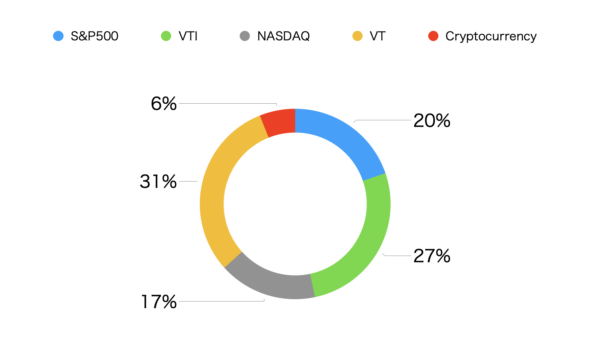
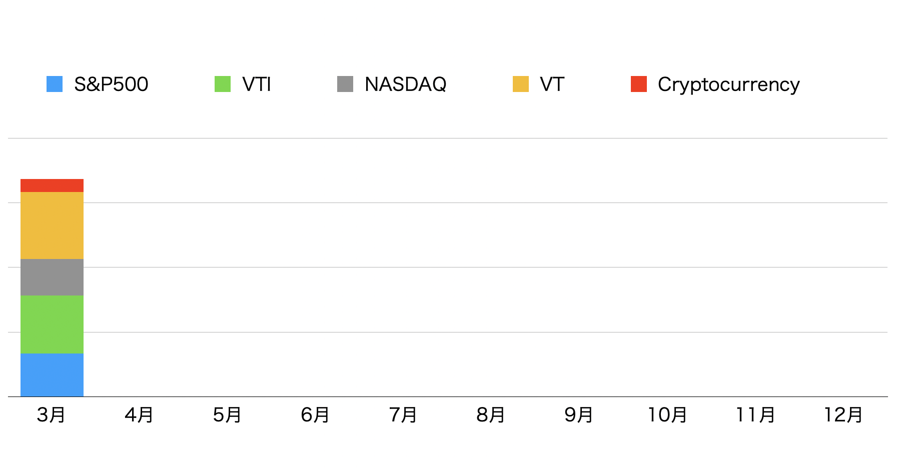
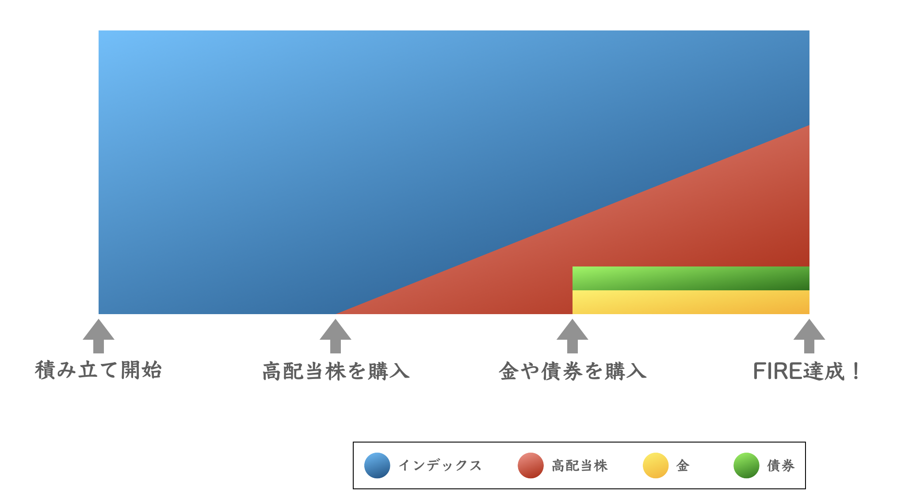
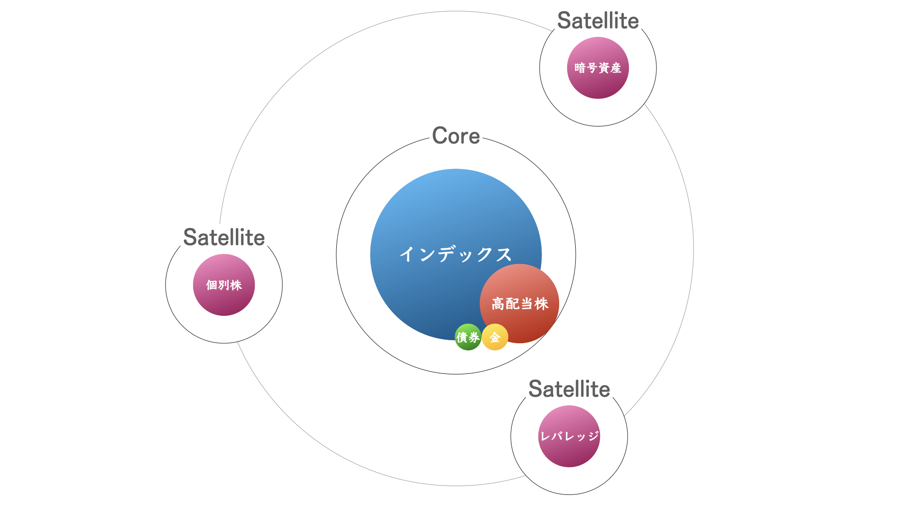

私のポートフォリオ
この記事の目的
この記事を書く目的は、投資に対する向き合い方が適切であるかを確認することである。現在のポートフォリオを確認することで適切な資産配分やリスクの取り方ができているかをチェックし、自分自身を監視する。
現在に至るまでの状況を振り返り、経済的自立を達成するための方法を模索する。
2022年3月時点の私の投資割合
円グラフは投資信託やETFなどを一緒にして作成している。

正直、割合などをあまり考えずに購入してしまっている。
ベストなポートフォリオはリスク許容度によって変化すると思うので、今後の予定や環境に合わせて変化させていきたい。
2022年3月現在は特にNASDAQが下落しているのでややダメージは受けている。
仮に数年間下落相場が継続しても積み立てをやめるつもりはない。
現金比率が高めだったり、まだ年齢的に猶予があるので落ち着いているのかもしれない。
現金が少なかったり、年齢とともに運用額が増加することで精神的なダメージを受けやすくなる可能性はあるので、その辺りも意識しながらリスク資産と向き合っていきたい。
今後の投資の予定
結局やることは積み立てをベースに、たまに買い時だと思われる時にスポットで購入するのが良いか。私の目標は30代までに経済的自由を達成することなので、それまでに資産を肥大させる必要がある。
現在はインデックスに投資しており、30代前半まではこれを継続していく。
その後、30代半ば以降はキャッシュフローや資産の安定性も考慮し、高配当株やゴールド、債券なども積み立てていく。
投資で資産を肥大させることだけを考えれば、長期で見ればインデックス投資が最もFIREの再現性が高く効率が良いと考えている。
資産形成後も4%ルールに従えば、かなりの確率で資産は減少するどころか増加するとの研究もある。
しかし、実際に資産を取り崩すフェーズに移行すると、取り崩すことに精神的ストレスを感じる可能性がある。
株式は常に暴落の可能性を孕んでいる。また金額の大小に関わらず、一度築いた資産を取り崩すのには不安を覚えるだろう。
そこで不安を感じるぐらいなら、取り崩さなければいいのだと考えた。
私の中でのインデックス投資の位置付けは生活費などの固定の支出を補填する資産ではなく、臨時の支出のための資産としている。
臨時の支出であれば、インデックスを取り崩してまで支払う価値のあるものなのかじっくり吟味することができる。
インデックスを取り崩さない代わりとして、株式でキャッシュフローを確保することができる高配当株に目をつけた。
高配当株であれば、配当金が強制的に入ってくるので取り崩しの精神的ストレスを感じることはない。
では、最初から高配当株で資産形成すれば良いと思われるかもしれないが、
それでは資産の成長がインデックス投資に劣る可能性がやや高いと考えている。
その理由としては税金面で不利だったり、必ずしも成長性において優れているとは言えないからだ。
だから、資産形成初期はインデックス投資で資産の核を作り、核がある程度成長したらインデックスとのバランスを考えながら少しづつ投資対象を高配当株へシフトする戦略を考えた。
ゴールドや債券は高配当がある程度成長したら、株式暴落時の安定性を目的としてポートフォリオに組み入れたいと考えている。

高配当株や金、債券を積み立てるのは数年後の予定なので、それまでに様々な知識をつけていきたい。
もし仕込み時が不意に訪れた場合には、この予定にこだわることなくリスク許容度の範囲内で高配当株をスポット購入したり、積み立て時期を早める可能性はある。
また、コア・サテライト戦略でインデックスをコアとし、個別株や暗号資産、レバレッジなども過度に恐れるのではなく、今後サテライト枠として慎重に投資していきたいと考えている。

株式は資産形成において非常に強力だが、株式だけを頼りにするのではなく、人的資本や社会資本を磨いて本業や副業で安定して稼ぐことも重視したい。
言うだけなら誰でもできる。
行動を継続して初めて意味をなすので、考えつつ、動きつつバランスを考えて計画を実行していきたい。
この記事が私の弟やあなたの役に立ちますように。
記事内容に誤りなどがございましたら、
Twitterなどで優しくお知らせいただけると幸いです。
2022/03/08